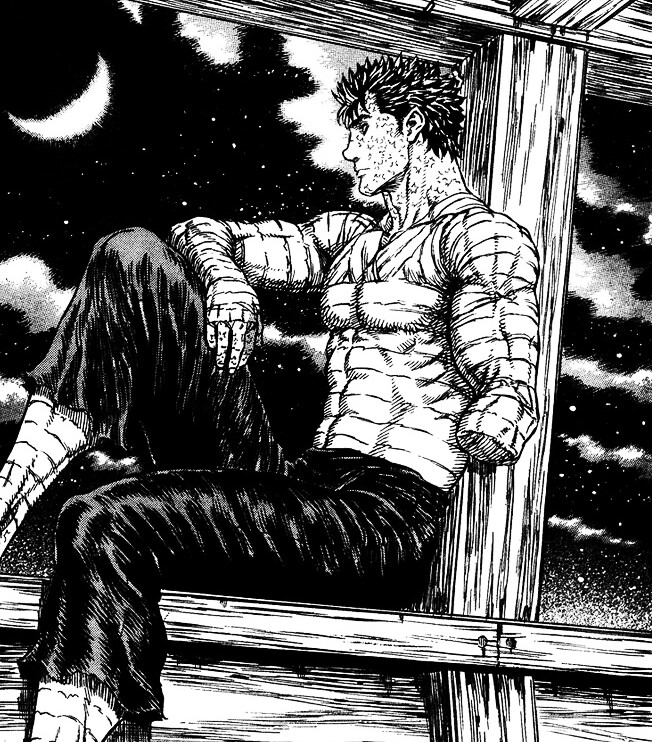

thisisvoid.in
thisisvoid.in
reflections

- It’s been a rough month for me. I kept pushing through after multiple setbacks. I planned on something, lost everything on the way,a lot of money and more importantly, my three years.
- Reflecting on failures is always painful, but it is important to learn and evolve as a human being. The only way to not make the same mistakes again and again is to go through the emotions, face them with full conviction, accept that things went south, and learn.
- I can’t get my time back, but there are things I wish I could have done better:
- Don’t keep all your eggs in one basket. This is very common advice that people come up with, especially when it is related to the stock market. This is applicable to every aspect of life. Usually, when things are hard, we use our human instincts, and our brain is wired to have backups. But we often don’t think about it when things are simple and mundane or when everyone does it, so you hope it will work for you as well. Building a system of thinking about a plan B for every single decision will be taxing at first, but it’s worth it in the long run. The pain of messing up our only choice is worse than planning our alternate choices and preparing our heart and mind to carry on with plan B, even if plan A flops.
- Be a human. Do normal things that other humans do. Obsession doesn’t mean that you have to give up on everything else which you aren’t obsessed with. The more humane you are, the less painful it gets when things don’t go right. Suppose you are obsessed with building a product, and what if it didn’t work out? Thinking about it and all you have are memories of your obsession which didn’t work and nothing else? It does make the moving-on process very difficult. That’s exactly what I am going through now. Over the past 3 years, I’ve clocked in all my free time, multitasked most of the days, and kept coding day in and day out—learning, building, breaking—without a day off. No Saturday, no Sunday, no holidays. I don’t have a single day I could now think of and point out that I had a super fun day (something apart from coding). I should have toned it down. I had so many hobbies back in the day, like photography, making films, wanting to play pro cricket, watching films, watching anime, and so on. Guess what? I watched no films at my home, no anime, and have no idea where my camera is.
- It’s kind of stupid how I spent 0 rupees in the past 3 years on myself. It’s mind-boggling when I think about it. I still feel I would live this way so that I would have enough runway to take bigger risks. I can buy a lot of things which I always wanted to, but I don’t have the heart to buy any of them.
- The biggest consequence of this so called “zen focus” is that now I have no one around. No contact with my friends. No idea what everyone is doing, no genuine real-life connections. Now I can’t even go ask for a referral from someone now, lol xd. I would think about others, that they are directionless, that they are the same as we used to be in college. But it turns out I am the stupid one here. This so called “zen focus” also makes you entitled. You start looking down on people. Everything needs a balance. Now, after losing my main goal, I wish I could turn things around. Thanks to this experience, it has now made me even more grounded and empathetic. I called a few of my friends and caught up with them. Everything felt the same way it used to be. I hope I keep in touch.
- My biggest regret is I wish I could have spent more time with my mom. I’m glad now I have realized it before it’s too late. Now, no one is standing beside me except her. It’s always been her. Now, every day I wait for her work to get over and for her to reach home so that I can talk to her just how I used to. My obsession with achieving my goal has blindsided me. Zero calls, zero messages just a broken phone. At times, I think Ambani is profitable just because I recharge every year and hardly make single-digit calls. I always run with this goal of making her proud. But now I understand that none of it matters to her. What if I win everything when I can’t spend and have fun together? One of the biggest learnings for me will be that I need to put in constant effort, be around her, and keep her happy.
- Optimistically, I deserve to learn all these valuable life lessons. Even though I made a lot of mistakes, one thing I didn’t mess up is my finances. I have this one motto which I religiously follow: “Never take a loan.” So I would live super frugally and do things only if I could afford them comfortably. This is the only reason why I am still confident that I can turn things around at any time. I still stand by this ideology. I am okay with people buying things on EMI. Even now, I am in a situation where I need to take a huge chunk of a loan that can turn things around for me, give me a new career trajectory, solve all the problems, and maybe make ‘x’ times what I would take up as a loan. But I will not go ahead with it and will stay with my conviction. If I can’t afford it, I don’t deserve it.
- I slacked off way too much in college and had this guilt of wasting four years of my engineering degree. So now I don’t feel guilty anymore because I feel that I equalized my wasted time by working hard.
- I’m grateful for my family for supporting me to do whatever I like to. I am pretty sure that I will laugh at this blog post in a year’s time. I’m optimistic and pumped to see what lies ahead.